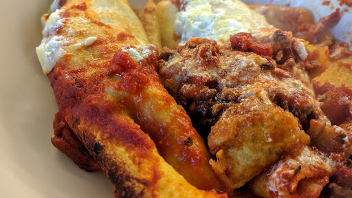

Beef enchilada with sweetcorn and avacado salsa
Ingredients
- 1 onion, chopped
- 2 cloves garlic, finely chopped
- 500 g beef mince
- 1 x 400 g tin chopped tomatoes
- 1 tsp sugar
- 2 fat red chillis, cut into thin slices
- 2 tsp cumin
- 1 beef stock cube
- 1 tbsp tomato puree
- salt and pepper
- 1 x 400 g tin tomatoes
- 1 tbsp tomato puree
- 1 tsp sugar
- 8 corn tortillas
- 300 ml creme fraiche or soured cream
- 1 tbsp chopped basil
- 1 mug grated cheddar cheese
- 2 tbsp olive oil
- 1 avacado, peeled and cut into chunks
- juice of lemon
- 3 spring onions, chopped
- 1 tsp sugar
- 2 tomatoes, chopped into chunks
- 0.5 x 340 g tin sweetcorn
Instructions
- Preheat the oven to 220°C/Gas 9.
- Heat a little oil in a saucepan. Fry the onions and garlic for 2 minutes until they become soft. Add the mince and fry until it is no longer pink.
- Add the chopped tomatoes, sugar, chilli, cumin, beef stock and tomato puree. Cook for about 5 minutes, the mixture should be quite thick, not runny. Season with salt and pepper. Leave to cool slightly.
- Mix the tomato sauce ingredients and whizz with a hand held blender.
- Mix the white sauce ingredients in a bowl.
- Grease a large oven proof dish with oil. Divide the meat mixture between the 8 tortillas and roll each one up. Place side by side in the dish.
- Pour over the tomato sauce and then pour the white sauce on top of that.
- Place in the oven for 10-15 minutes or until the top begins to brown.
- While the enchiladas are cooking, prepare the salsa by mixing all the ingredients in a bowl.
Source
Nosh for graduatesShort URL | Long URL